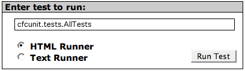

Installation
Due to the number of bug fixes and enhancements with components provided in CFMX 6.1, prior versions will not work. If you do have CFMX but not 6.1 or later, it is a free upgrade from 6.0 to 6.1.
The cfcUnit distribution is made up of two parts:
- Core cfcUnit library components (/org/cfcunit/)
- Test runner application files (/cfcunit/)
To deploy cfcUnit, simply unpack the zip file into the webroot. That's it.
If the cfcUnit files have been successfully deployed, you should be able to go right into your browser and open a new test runner. This document assumes that the web site is available at http://localhost. The test runner application can be found at http://localhost/cfcunit. Once you have the test runner up, you want to test the core framework files to make sure they are all working properly. To run the tests, enter "cfcunit.tests.AllTests" into the available text field:

There is a text version of the test runner as well as an html version. The Text Runner will tell you if a test passes or fails, but little else. The HTML Runner on the other hand give much more information about each test's success or failure. Select one or the other and click the button labeled "Run Test". If the tests pass the runner will let you know. If not, then check out the error message and figure out why. Next, run the same tests using the other tests runner to make sure that they both work (for completeness).
If you've gotten this far, congratulations! cfcUnit is now installed and ready to be used. Now lets write some tests.